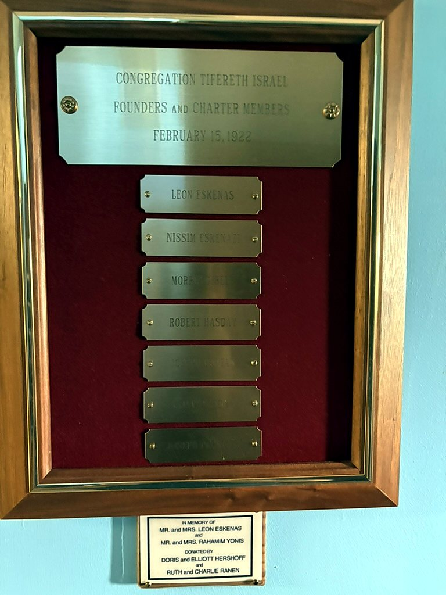
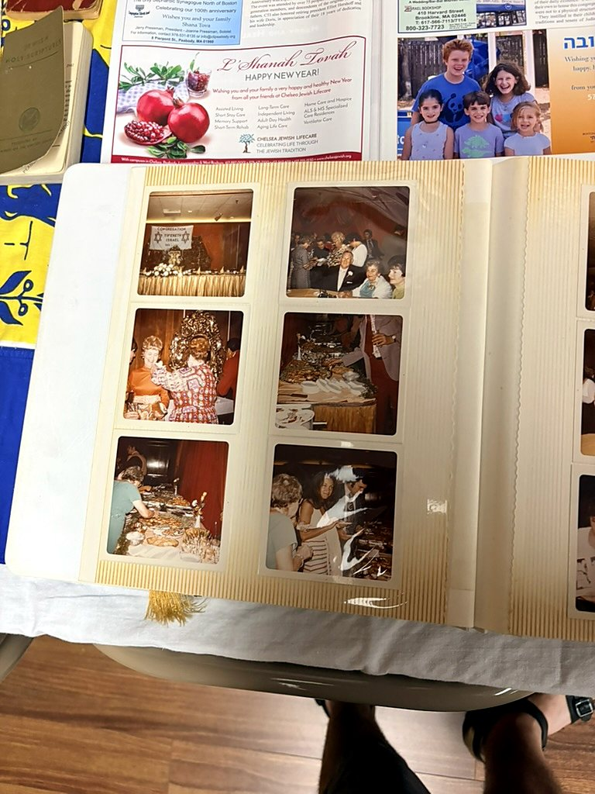
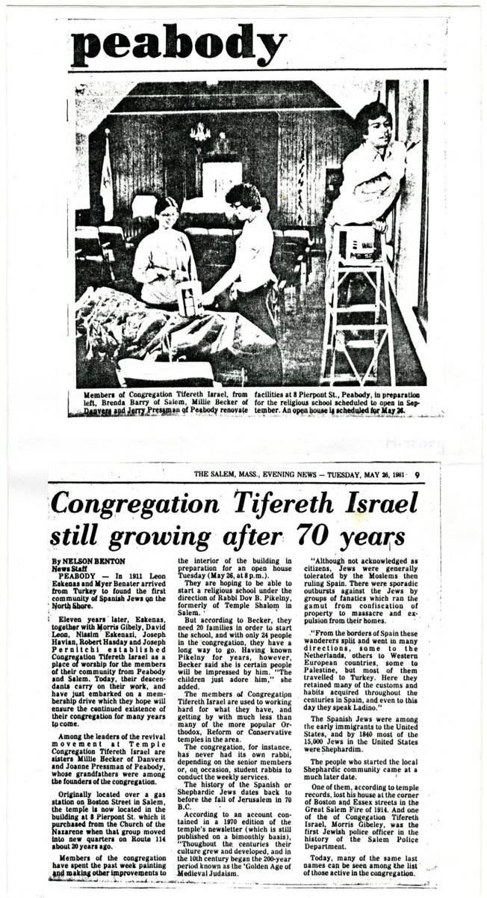
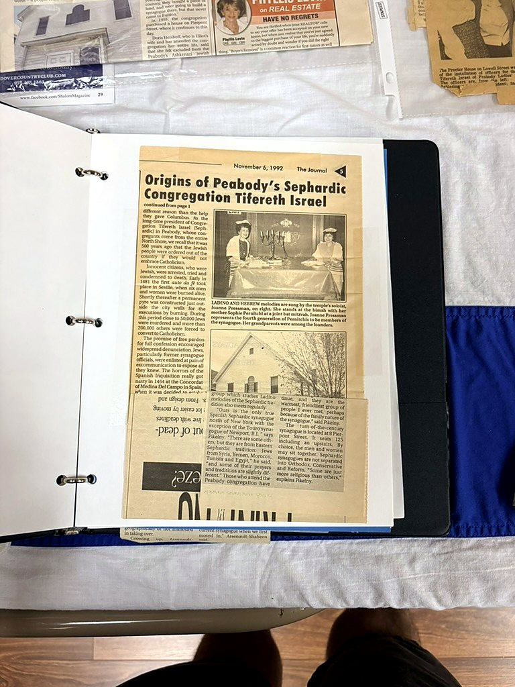
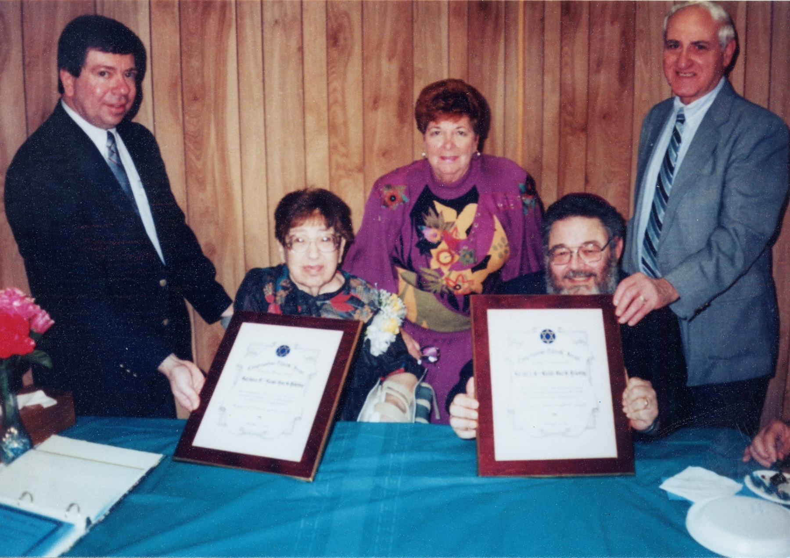
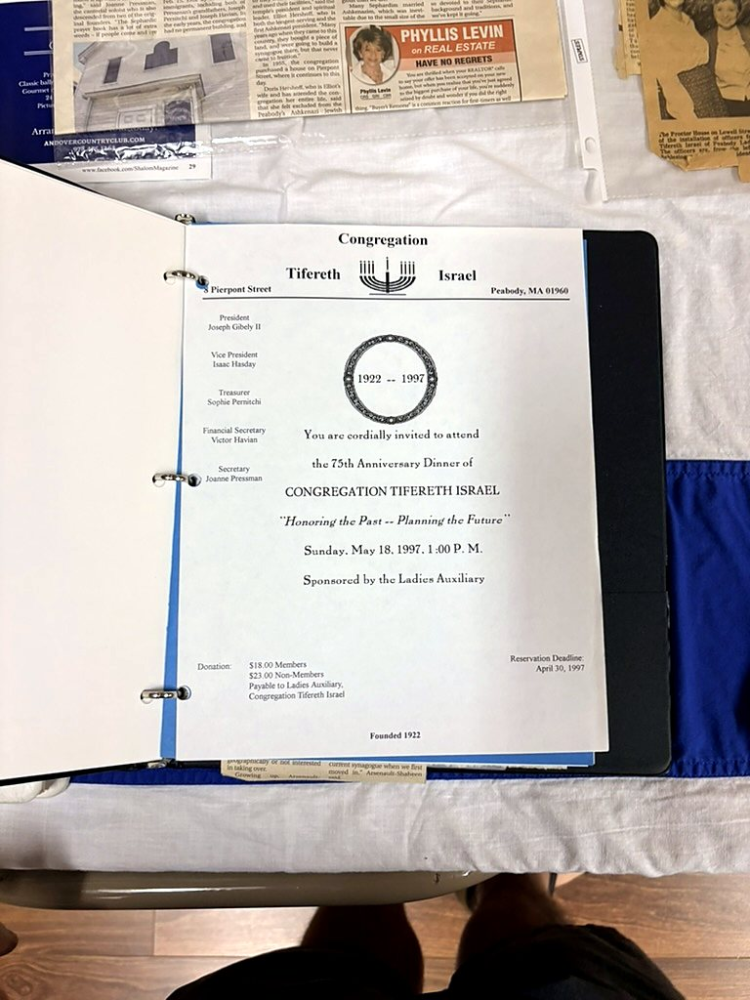
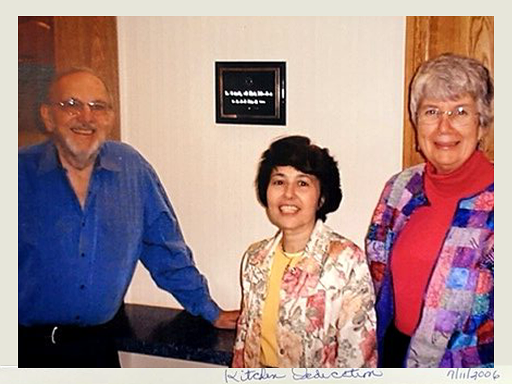
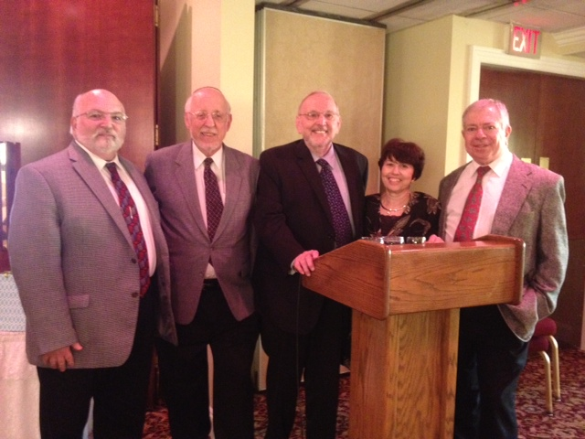
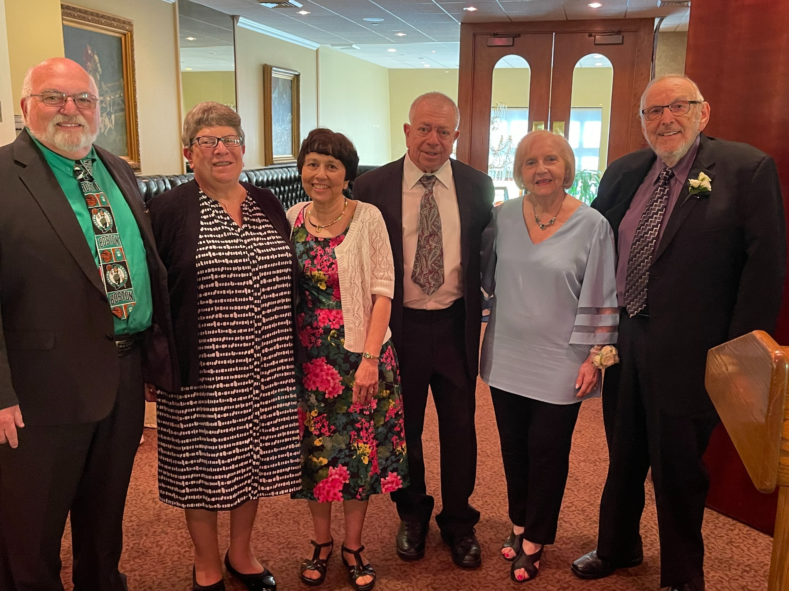

Historical Timeline
Milestones in the history of Congregation Tifereth Israel.
Historical Timeline
Small images point to the fuller photograph, album, article, or archival object without repeating it here.

Congregation Tifereth Israel Is Born
Seven Turkish Jewish immigrants formally chartered CTI on February 15, 1922. View the founders plaque and transcription →

An Early Archival Image
This archival exterior photograph is labeled “Congregation Tifereth Israel 1922.” The surviving label is preserved here without claiming that the photograph itself was taken in 1922. View the photograph in the Gallery →

Golden Anniversary
CTI marked fifty years of congregational life; photographs survive together in its anniversary album. Open the separated photo album →

Still Growing After 70 Years
A Salem Evening News profile documented CTI's history, membership drive and renewed religious life. Read the article transcription →

In Search of a Home
The Salem Evening News profiled CTI on Oct. 31, 1992, ahead of the Nov. 4 Sephardic quincentennial commemoration. Read the archival article →

Honoring Rabbi and Cantor Pikelny
CTI honored Rabbi Dov B. Pikelny and Cantor Barbara Pikelny for 13 years of service. View the photograph in the historical gallery →


75th Anniversary
The Ladies Auxiliary sponsored CTI's 75th Anniversary Dinner on May 18, 1997. The invitation is preserved as anniversary ephemera.

Kitchen Dedication
A photograph and invitation preserve this congregational milestone. View the photograph →

Celebrating 90 Years
CTI marked nine decades of Jewish life in Peabody. View the 90th anniversary photograph →

One Hundred Years
CTI celebrated its centennial and a century of continuity. View the centennial photograph →